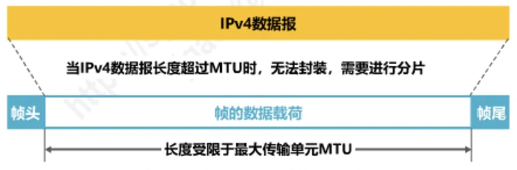
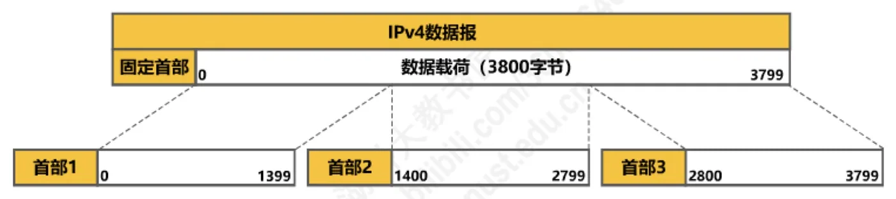
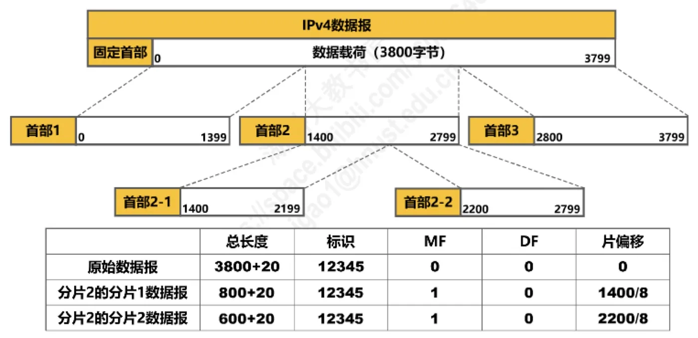
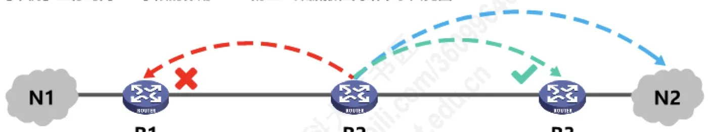
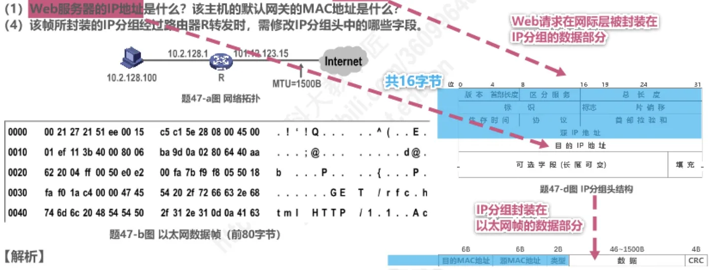

计算机通信与网络 · 第 4 章 网络层
4.7 IPv4数据报的首部格式
网络层的工作最终都落在 IP 数据报上，而数据报长什么样、每个字段管什么，全都写在它的首部里。本节把 IPv4 数据报的首部拆开：先看 20 字节固定部分和最多 40 字节可变部分的整体结构，再逐个字段讲清楚长度、作用和取值，最后用「数据报分片」和「生存时间 TTL」两个例子把字段之间的关系串起来，并借两道真题练习读首部、算分片。这一节是后面 ICMP、NAT 以及运输层各节的基础，字段记不牢，后面每讲一个协议都要回头补课。
1. 首部由 20 字节固定部分和最多 40 字节可变部分组成
IPv4 数据报由首部和数据载荷两部分组成。首部的前 20 个字节是所有 IPv4 数据报都必须有的，称为固定部分，里面依次排列着 12 个字段；固定部分后面是可变部分，由可选字段和填充字段构成，长度最多 40 字节。换句话说，一个 IPv4 数据报的首部最短 20 字节、最长 60 字节。
看首部图时要注意两件事。第一，整个首部是按 32 位（即 4 字节）一行画的，图上方的 0、16、19、24、31 是比特位的编号，字段从第 0 位开始依次排列。第二，各字段的长度都以比特计，而且不少字段的长度不是 8 的整数倍——版本 4 比特、标志 3 比特、片偏移 13 比特，它们必须拼在一起才凑满一行。这种「按位掐着算」的排布，正是后面计算片偏移时最容易出错的地方。
先把固定部分的 12 个字段连同长度和作用列成一张表，当作后面逐字段讲解的地图。读表时请留意每个字段的长度，尤其是那几个不足 8 比特的字段。
| 字段 | 长度 | 作用 |
|---|---|---|
| 版本 | 4 比特 | 指明 IP 协议版本，IPv4 取 4 |
| 首部长度 | 4 比特 | 首部的长度，以 4 字节为单位，取值 5～15 |
| 区分服务 | 8 比特 | 期望获得更好的服务，一般情况下不使用 |
| 总长度 | 16 比特 | 首部加数据载荷的总字节数，最大 65535 |
| 标识 | 16 比特 | 同一个数据报的各分片取值相同，用于重组 |
| 标志 | 3 比特 | DF 位、MF 位与保留位 |
| 片偏移 | 13 比特 | 本片数据载荷在原数据报中的位置，以 8 字节为单位 |
| 生存时间 | 8 比特 | 数据报还能存活多久，现在以跳数为单位 |
| 协议 | 8 比特 | 指明数据部分是何种协议数据单元 |
| 首部检验和 | 16 比特 | 检验首部在传输过程中是否出现差错 |
| 源 IP 地址 | 32 比特 | 发送该数据报的源主机的 IP 地址 |
| 目的 IP 地址 | 32 比特 | 接收该数据报的目的主机的 IP 地址 |
| 可选字段（可变部分） | 1～40 字节 | 支持排错、测量及安全等措施，很少使用 |
| 填充（可变部分） | 凑满 4 字节的整数倍 | 用全 0 填充，保证首部长度能被 4 整除 |
2. 版本与首部长度
（1）版本
版本（Version）字段占 4 比特，表示 IP 协议的版本。通信双方使用的 IP 协议版本必须一致，目前广泛使用的版本号为 4，也就是 IPv4。这个字段虽然短，却是整段首部的「解释开关」：不同版本的 IP 协议，首部格式完全不同，收到一串比特后先看这 4 位，才知道后面该按哪套规则去读。
（2）首部长度
首部长度字段占 4 比特，表示 IP 数据报首部的长度，该字段的取值以 4 字节为单位。最小十进制取值为 5，表示首部只有 20 字节固定部分（5 × 4 = 20 字节）；最大十进制取值为 15，表示首部包含 20 字节固定部分和最大 40 字节可变部分（15 × 4 = 60 字节）。
把「以 4 字节为单位」这句话记住，遇到首部长度字段等于 5 时就不必再换算：它正好是没有可选字段的普通数据报。也正因为这个字段的单位是 4 字节，首部的长度必须凑成 4 字节的整数倍，这就直接引出了可变部分的两个字段。
（3）可变部分：可选字段与填充字段
可选字段的长度从 1 个字节到 40 个字节不等，用来支持排错、测量及安全等措施。它增加了 IP 数据报的功能，但同时也使得 IP 数据报的首部长度成为可变的，这就增加了每一个路由器处理 IP 数据报的开销；实际上可选字段很少被使用。
填充字段的作用很单纯：确保首部长度为 4 字节的整数倍，使用全 0 进行填充。可选字段长度不定，凑不满 4 字节整数倍时，就由填充字段补足，这样首部长度字段用一个整数就能表示整个首部的长度了。
3. 区分服务与总长度
（1）区分服务
区分服务字段占 8 比特，用来获得更好的服务。该字段在旧标准中叫作服务类型，但实际上一直没有被使用过；1998 年，因特网工程任务组 IETF（Internet Engineering Task Force）把这个字段改名为区分服务，利用该字段的不同数值可提供不同等级的服务质量。只有在使用区分服务时，该字段才起作用，一般情况下都不使用该字段。
（2）总长度
总长度字段占 16 比特，表示 IP 数据报的总长度，也就是首部加数据载荷的长度，最大取值为十进制的 65535，以字节为单位。这里要分清两个「长度」：首部长度字段说的是首部自己有多长，总长度字段说的是整个数据报有多长，两者相减才是数据载荷的长度。
原讲义用一个例子把这三个量串了起来：首部长度字段的值是 (0101)2，乘以 4 得 20 字节；总长度字段的值是 (0000001111111100)2，即十进制的 1020 字节；于是数据载荷长度 = 总长度 − 首部长度 = 1020 − 20 = 1000 字节。也就是说，这个 IPv4 数据报一共 1020 字节，由 20 字节首部和 1000 字节数据载荷拼成。
16 比特带来的上限是 65535 字节，但实际网络中数据报很少接近这个值，因为它的长度还要受下层链路的最大传输单元限制，这就是下一个主题要讲的问题。
4. 标识、标志与片偏移：与分片有关的三个字段
接下来这三个字段是要配合使用的，它们共同用于 IP 数据报的分片。先说为什么需要分片：IPv4 数据报最终要封装成链路层的帧来传输，而各种链路层协议对帧能承载的数据长度都有上限，这个上限称为最大传输单元 MTU（Maximum Transfer Unit），例如以太网规定 MTU 值为 1500 字节。当 IPv4 数据报的长度超过 MTU 时，无法封装进一个帧，就必须进行分片。

（1）标识
标识字段占 16 比特，属于同一个数据报的各分片数据报应该具有相同的标识。IP 软件维持一个计数器，每产生一个数据报，计数器值加 1，并将此值赋给标识字段。这样做的目的是让接收方能凭标识判断哪些分片来自同一个原始数据报——分组在网中可能乱序到达，甚至几个数据报的分片混在一起，有了标识才不会拼错。
（2）标志
标志字段占 3 比特，各比特含义如下：
- DF 位：1 表示不允许分片；0 表示允许分片；
- MF 位：1 表示「后面还有分片」；0 表示「这是最后一个分片」；
- 保留位：必须为 0。
DF 位是给发送方和沿途路由器的一个硬性约束：如果 DF 置 1 而数据报又超过了 MTU，路由器就只能丢弃它，并向源主机报告差错（这个报告工作由 4.8 节的 ICMP 承担）。
（3）片偏移
片偏移字段占 13 比特，指出分片数据报的数据载荷部分偏移其在原数据报的位置有多少个单位，片偏移以 8 个字节为单位。这句话有两层意思：一是偏移量记的是「本片数据载荷的首字节」在原数据报数据载荷中的位置；二是填进字段的值是字节位置除以 8 之后的结果，因此除最后一片外，每个分片的数据载荷长度都必须是 8 的整数倍。
（4）分片举例
原讲义用一个数据载荷为 3800 字节的 IPv4 数据报来说明分片过程。第一次分片把它切成 1400、1400、1000 字节三片，每一片都加上自己 20 字节的首部（图 3）。

三片的标识字段都填 12345，总长度分别是 1400 + 20、1400 + 20、1000 + 20 字节，片偏移量则要把字节偏移除以 8 之后再填入字段。
| 数据报 | 数据载荷 | 总长度 | 片偏移 |
|---|---|---|---|
| 原始数据报 | 3800 | 3820 | 0 |
| 分片 1 | 1400 | 1420 | 0 |
| 分片 2 | 1400 | 1420 | 175 |
| 分片 3 | 1000 | 1020 | 350 |
故事还没有结束：分片 2 在转发途中又遇到一段 MTU 更小的链路，它那 1400 字节的数据载荷被再次切成 800 字节和 600 字节两片，标识仍然是 12345（图 4）。这说明分片可以发生多次，一个原始数据报可以变成好几个分片。

| 数据报 | 数据载荷 | 总长度 | 片偏移 |
|---|---|---|---|
| 原始数据报 | 3800 | 3820 | 0 |
| 分片 2-1 | 800 | 820 | 175 |
| 分片 2-2 | 600 | 620 | 275 |
把两次分片放在一起看，可以总结出三条规律，它们就是后面做分片题的依据：每一片都要带自己的首部，首部中的标识必须与原数据报相同；总长度只统计「本片的首部 + 本片的数据载荷」，而不是原数据报的总长度；片偏移量记的是本片数据载荷在原数据报中的字节位置除以 8 之后的结果（分片 2-1 的偏移量 175 与第一次分片时分片 2 的偏移量相同，正说明它承接的就是同一段数据）。至于 MF 位：第一次分片后，分片 1、分片 2 后面还有分片，MF 置 1，分片 3 是最后一片，MF 置 0；分片 2 再被分成两片后，分片 2-1、分片 2-2 后面都还有分片 3，所以它们的 MF 位仍然为 1，整个数据报中只有最后一片的 MF 才为 0。这些分片的 DF 位都为 0，表示允许分片。
5. 生存时间 TTL：防止数据报在网络中永久兜圈
生存时间 TTL（Time To Live）字段占 8 比特，表示 IP 数据报的生存时间。它的用法前后有过一次变化：最初以秒为单位，最大生存周期为 255 秒，路由器转发 IP 数据报时，要把该字段的值减去 IP 数据报在本路由器上所耗费的时间，若结果不为 0 就转发，否则就丢弃；现在以「跳数」为单位，路由器转发 IP 数据报时，把该字段值减 1，若不为 0 就转发，否则就丢弃。
不论按秒还是按跳数，这个字段的作用始终是防止 IP 数据报在网络中永久兜圈。数据报每经过一个路由器就被减掉一次，一旦减到 0 立刻被丢弃，这样即使某台路由器的路由表配错了，也不会有数据报永远在网络里转下去。

原讲义用三台路由器 R1、R2、R3 和网络 N1、N2 的例子说明这个机制。正常情况下，R1 把去往 N2 的数据报交给 R2，R2 再从 R3 一侧转发出去；可是当 R2 的路由表中去往 N2 的下一跳被错配成 R1 时（图 5），源主机发往 N2 的数据报就会在 R1 和 R2 之间被来回转发：R1 交给 R2，R2 又交回 R1……这就是路由环路。这类故障的成因和判断方法，4.5 节「静态路由配置及其可能产生的路由环路问题」已经专门讨论过，这里关心的是它的后果。
图 6 给出的结论正是 TTL 的价值所在：数据报在 R1 与 R2 之间兜圈的过程中，每经过一个路由器 TTL 就减 1，等它减到 0，路由器就把数据报丢弃，环路不会无休止地进行下去。
6. 协议字段：数据部分装的是什么
协议字段占 8 比特，指明 IPv4 数据报的数据部分是何种协议数据单元。常用的一些协议和相应的协议字段值如下表。
| 协议名称 | 协议字段值 |
|---|---|
| ICMP | 1 |
| IGMP | 2 |
| TCP | 6 |
| UDP | 17 |
| IPv6 | 41 |
| OSPF | 89 |
原讲义用两个例子说明这个字段怎么用：若协议字段的值为 1，则数据部分封装的是 ICMP 报文；若协议字段的值为 6，则数据部分封装的是 TCP 报文段（TCP 报文段的首部格式在 5.9 节讨论）。可以看出，IP 层只负责把数据报送到目的地，至于数据部分该交给谁处理，完全由协议字段指定：收方读到 6 就交给 TCP，读到 17 就交给 UDP，读到 1 就交给 ICMP。下一节要讲的网际控制报文协议 ICMP，正是靠协议字段取值 1 与 IP 数据报区分开的。
7. 首部检验和与源、目的 IP 地址
（1）首部检验和
首部检验和字段占 16 比特，用来检测首部在传输过程中是否出现差错。它比 CRC 检验码简单，称为因特网检验和。顾名思义，它只对首部做检验；此外，IP 数据报每经过一个路由器，路由器都要重新计算首部检验和，因为某些字段（生存时间、标志、片偏移等）的取值可能发生变化——字段变了，检验和自然也必须跟着变。
原讲义还交代了它的去向：由于 IP 层本身并不提供可靠传输的服务，并且计算首部校验和是一项耗时的操作，因此在 IPv6 中，路由器不再计算首部校验和，从而更快转发 IP 数据报。
（2）源 IP 地址和目的 IP 地址
源 IP 地址和目的 IP 地址各占 32 比特，用来填写发送该 IP 数据报的源主机的 IP 地址和接收该 IP 数据报的目的主机的 IP 地址。这两个字段在数据报沿途转发时一般保持不变，与要不断被改写的 TTL 和首部检验和形成对比；当然也有例外，4.9 节要讲的网络地址转换 NAT 就会改动它们。地址怎样编址、怎样分组，是 4.3 节的内容；路由器如何根据目的 IP 地址查表转发，则是 4.4 节的内容。
8. 真题解析：读首部、算分片
（1）2018 年题 47 第（2）问：MTU = 800 B 时怎样分片
题 47 描述的网络如图 7 所示：IP 地址空间 192.168.1.0/24 被均分给销售部和技术部两个子网，并已分别为部分主机和路由器接口分配了 IP 地址，销售部子网的 MTU = 1500 B，技术部子网的 MTU = 800 B。
第（2）问是：假设主机 192.168.1.1 向主机 192.168.1.208 发送一个总长度为 1500 B 的 IP 分组，IP 分组头部长度为 20 B，路由器在通过接口 F1 转发该 IP 分组时进行了分片。若分片时尽可能分为最大片，则一个最大 IP 分片封装数据的字节数是多少？至少需要分为几个分片？每个分片的片偏移量是多少？
解析（原讲义第 1066—1068 页）分四步：
- 主机 192.168.1.1 发出的 IP 分组总长度为 1500 B，减去 20 B 首部，数据载荷是 1480 B；
- 路由器经接口 F1 把它转发到技术部子网，该子网的 MTU = 800 B，所以每个分片的最大总长度为 800 B，最多能封装 800 − 20 = 780 B 数据；
- 但片偏移量必须为整数，而片偏移以 8 字节为单位，要求每个分片的数据载荷长度能被 8 整除；780 ÷ 8 = 97.5 不是整数，所以「每片装 780 B」这种分片方案不行；
- 应取小于 780 且能被 8 整除的最大整数，即 776 B（776 ÷ 8 = 97）：分片 1 封装 776 B 数据，片偏移量 = 0 ÷ 8 = 0；分片 2 封装剩下的 1480 − 776 = 704 B 数据，片偏移量 = 776 ÷ 8 = 97。
776 + 704 = 1480 B 正好分完，两片也都没有超过 780 B。所以答案是：一个最大 IP 分片封装数据 776 字节；至少需要分为 2 个分片；两个分片的片偏移量分别是 0 和 97。
（2）2011 年题 47：从以太网帧内容读出首部字段
题 47-a 图是网络拓扑，题 47-b 图是主机进行 Web 请求的 1 个以太网数据帧前 80 个字节的十六进制及 ASCII 码内容。问题是：（1）Web 服务器 IP 地址是什么？该主机的默认网关的 MAC 地址是什么？（4）该帧所封装的 IP 分组经过路由器 R 转发时，需修改 IP 分组头中的哪些字段。

拓扑中，主机 10.2.128.100 通过默认网关 10.2.128.1（路由器 R 的接口）接入 Internet，MTU = 1500 B，Internet 一侧还标注了一个地址 101.12.123.15。把题 47-b 图这一帧的前 80 个字节按每行 8 字节列出来，行首是帧内的字节偏移量（十六进制）：
0000 00 21 27 21 51 ee 00 15
0008 c5 c1 5e 28 08 00 45 00
0010 01 ef 11 3b 40 00 80 06
0018 ba 9d 0a 02 80 64 40 aa
0020 62 20 04 ff 00 50 e0 e2
0028 00 fa 7b f9 f8 05 50 18
0030 fa f0 1a c4 00 00 47 45
0038 54 20 2f 72 66 63 2e 68
0040 74 6d 6c 20 48 54 54 50
0048 2f 31 2e 31 0d 0a 41 63以太网帧头占 14 字节：前 6 字节 00-21-27-21-51-ee 是目的 MAC 地址，接着 6 字节 00-15-c5-c1-5e-28 是源 MAC 地址，最后 2 字节 08 00 是类型字段，表示上层封装的是 IPv4 数据报。从偏移量 000e 开始是 IP 分组头，按本节讲的字段排布，可以逐项读出：
| 字段 | 帧中的十六进制值 | 读出的含义 |
|---|---|---|
| 版本、首部长度 | 45 | 版本为 4，首部长度为 5 × 4 = 20 字节 |
| 区分服务 | 00 | 未使用区分服务 |
| 总长度 | 01 ef | 495 字节（首部 + 数据载荷） |
| 标识 | 11 3b | 标识值为 0x113b |
| 标志、片偏移 | 40 00 | DF = 1（不允许分片）、MF = 0、片偏移量 = 0 |
| 生存时间 TTL | 80 | 128，即还可经过 127 个路由器 |
| 协议 | 06 | 数据部分是 TCP 报文段 |
| 首部检验和 | ba 9d | 供沿途路由器检验首部 |
| 源 IP 地址 | 0a 02 80 64 | 10.2.128.100，即发出该请求的主机 |
| 目的 IP 地址 | 40 aa 62 20 | 64.170.98.32，即 Web 服务器 |
第（1）问由此得到答案：Web 服务器的 IP 地址十六进制形式是 40 aa 62 20，点分十进制形式是 64.170.98.32。至于默认网关的 MAC 地址，原讲义的解析是：从图可知主机的默认网关就是路由器 R，主机会将 Web 请求发送给默认网关，由默认网关将 Web 请求转发到因特网，因此以太网帧头中的目的 MAC 地址字段封装的正是默认网关的 MAC 地址，具体为 00-21-27-21-51-ee。（帧的数据部分以 ASCII 的「GET /rfc.html HTTP/1.1」开头，目的端口 80，也印证了这是一个 Web 请求。）
第（4）问针对路由器 R 的转发动作：IP 分组经过路由器 R 时，生存时间字段被减 1；首部检验和会被重新计算；若 IP 分组的总长度大于 MTU，则需要进行分片，此时总长度字段、标志字段、片偏移字段都需要修改。就本题这一帧而言，它的总长度是 495 字节，远小于 MTU = 1500 B，并不发生分片，所以实际被修改的只有生存时间和首部检验和这两个字段。
本节小结
- IPv4 数据报的首部 = 20 字节固定部分 + 可变部分。固定部分依次是版本、首部长度、区分服务、总长度、标识、标志、片偏移、生存时间、协议、首部检验和、源 IP 地址、目的 IP 地址共 12 个字段；可变部分由 1～40 字节的可选字段和全 0 的填充字段构成。首部最短 20 字节、最长 60 字节，首部长度字段以 4 字节为单位，取值 5～15。
- 三个「不足 8 比特」的字段要单独记：版本 4 比特（IPv4 取 4，双方版本必须一致）、标志 3 比特（DF 位 1 表示不允许分片，MF 位 1 表示后面还有分片，保留位必须为 0）、片偏移 13 比特（以 8 字节为单位）；总长度 16 比特，是首部加数据载荷的总字节数，最大 65535。
- 数据报长度超过链路 MTU（以太网为 1500 字节）时必须分片：同一数据报的各分片标识相同，各自带自己的首部，总长度只算本片，片偏移量是本片数据载荷在原数据报中的字节位置除以 8；除最后一片外，各片的数据载荷长度必须是 8 的整数倍，只有最后一片的 MF 为 0。
- 生存时间 TTL 现在以跳数为单位，路由器转发时减 1，不为 0 就转发、为 0 就丢弃，用来防止数据报在路由环路中永久兜圈——这与 4.5 节的路由环路问题正好衔接。
- 协议字段指明数据部分的协议数据单元，常用值：ICMP = 1、IGMP = 2、TCP = 6、UDP = 17、IPv6 = 41、OSPF = 89；首部检验和只检验首部，每经过一个路由器都要重新计算，IPv6 中已取消这一计算。
- 路由器转发时要修改的字段是生存时间和首部检验和；若发生分片，还要修改总长度、标志和片偏移。源、目的 IP 地址在转发中一般不变，NAT 是例外（见 4.9 节）。